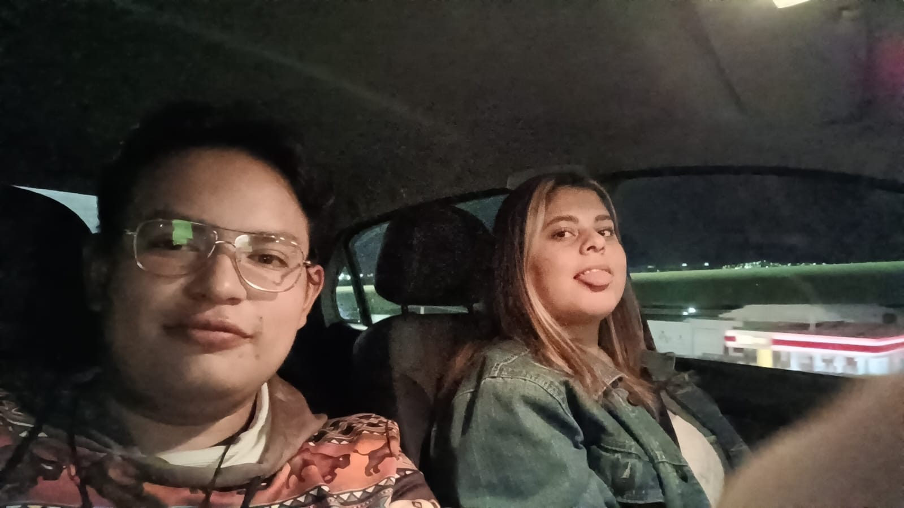

Me llamo Francisco Aldair Linares Castillo, una persona común nacida dentro del municipio de Saltillo, en el estado de Coahuila.
Estaba en un viaje a Monterrey por parte de la universidad, ese día mi grupo habitual del salón no fueron al viaje, asi que anduve haciendo amigos a varios compañeros de la carrera durante todo el viaje, durante el recorrido en un museo estuve platicando con un grupo de diseño gráfico, después de platicar con ese grupo me fui con mis compañeros de salón al area de comida para después pasar a otro museo, finalizando el viaje ibamos en el camion cuando un grupo de chicas atras de mi nos comienzan a hablar a mi compañero Francisco y empece a platicar con un grupo de personas entre ellas mi nueva amoga "capi".
Este día por apariencias debe ser bueno pero realmente siempre me causa mas nostalgia que alegría, ya que recuerdo todos los anteriores años que celebrabá con mas gente y familia
Celebrando el cumplaños de mi amiga decidí regalarle una sesión de fotografías para que tenga de recuerdo asi como un ramo durante toda la tarde estuvimos haciendolo, pasando el tiempo llego un momento donde su hermana Nani nos explica su negocio tiburón de hacer donitas.
Ya tengo un dia señalado para ver a mis amigas de la preparatoria y en este caso fue hoy donde para explicar que hicimos en todo el año hicimpos presentaciones en canva o powerpoint, donde estuvimos preparando nachos con carne receta de tiktok estvimos toda la tarde platicando.
Tuve un examen de empaque donde desarrollamos dos cajas, una era de joyería y la otra de lencería teniamos que hacer un decoro al restirador para presentar ambos empaques, después tuve una clase de aerografía donde deleetre mis iniciales.